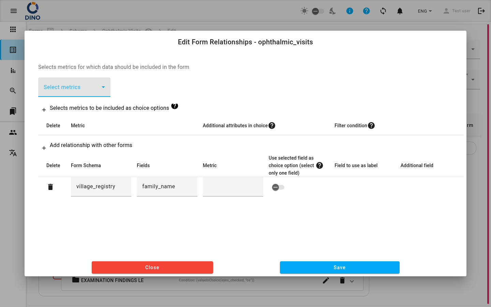

title: Editar esquema de formulario description: Cree y modifique esquemas de formulario: establezca nombre, icono, estados, métricas, visibilidad y defina relaciones.
Editar esquema de formulario
La página Editar esquema de formulario le permite crear un nuevo esquema de formulario o modificar uno existente. Aquí define los atributos básicos del formulario, gestiona sus estados y métricas, controla la visibilidad y vincula el esquema con otros formularios mediante relaciones.
Puede acceder a esta página de las siguientes maneras:
- Haciendo clic en Crear en la Vista general de formularios para crear un nuevo esquema.
- Seleccionando Editar en la tarjeta de un esquema existente o desde su vista de detalle.
Las migas de pan en la parte superior muestran su ubicación actual (p. ej., Formularios > Mi Encuesta > Editar).

Atributos del formulario
Complete o ajuste los siguientes campos:
| Campo | Descripción |
|---|---|
| Nombre del formulario | Un identificador único del sistema (p. ej., survey_2025). Dino advierte si el nombre ya está en uso. |
| Etiqueta del formulario | El nombre legible para humanos que se muestra en listas e informes. |
| Conjunto de iconos | Elija Predeterminado (iconos de material) o Humanitario (iconos SVG personalizados). |
| Identificador de icono | Seleccione un icono de la lista de autocompletado. La vista previa se actualiza en vivo. |
| Estados del formulario | Una o más etiquetas que describen el estado de un envío (p. ej., Borrador, Aprobado, Rechazado). Seleccione estados existentes o Crear nuevo estado para agregar uno sobre la marcha. |
| Métricas del formulario | Métricas que se recopilan para cada envío. Seleccione una o más de la lista. |
| Visibilidad | Privado – solo los miembros de los grupos asignados pueden ver el formulario. Público – cualquier persona con el enlace puede ver y enviar. |
| Comportamiento del conjunto de métricas | Predeterminado – cada valor de métrica puede aparecer varias veces en los envíos. Único – un valor de métrica (p. ej., un nombre de distrito) solo se puede usar una vez por formulario. |
| Generar informe | Cuando es Sí, Dino genera automáticamente un informe después de cada envío. Esta opción está oculta si ya está configurado un informe automático. |
Comportamiento único del conjunto de métricas
Utilice Único con cuidado: una vez que un valor se ha usado para una métrica, no se puede reutilizar en otro envío del mismo formulario.
Gestión de estados del formulario
- Haga clic en el campo Estados del formulario para expandir la lista.
- Para agregar un estado existente, marque su casilla de verificación.
- Para crear un nuevo estado, haga clic en Crear nuevo estado. Se abre un cuadro de diálogo donde puede ingresar una etiqueta, elegir un color y guardar.
- Para editar un estado existente, haga clic en el icono de editar (lápiz) junto a él.
- Haga clic fuera del menú desplegable para cerrarlo.
Definición de relaciones
Las relaciones le permiten vincular campos entre diferentes esquemas de formulario (p. ej., un subformulario que depende de una opción en el formulario principal).
- Haga clic en el botón Relaciones.
- En el cuadro de diálogo, agregue, edite o elimine conexiones entre esquemas.

Relaciones disponibles solo al editar un esquema existente, no durante la creación inicial.
Guardar e importar
- Guardar – almacena todos los cambios. El botón está deshabilitado si el formulario no es válido o aún se está guardando.
- Importar – abre un selector de archivos para cargar un esquema de formulario desde un archivo JSON o CSV. Úselo para reutilizar una estructura de esquema de otro proyecto.
El Constructor de formularios
Debajo de los atributos, el área Constructor de formularios le permite arrastrar, soltar y configurar campos individuales (preguntas, secciones, etc.). Los cambios se reflejan inmediatamente en la vista previa en el lado derecho del constructor.